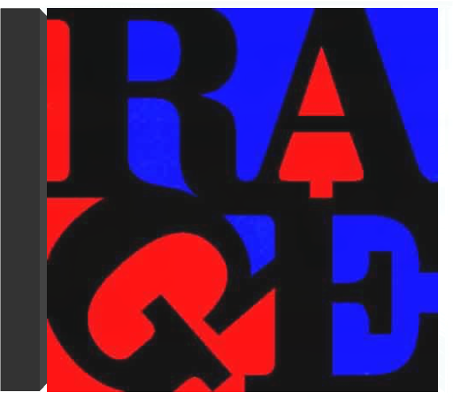

evil empirerage against the machine  Avec Evil Empire, Rage Against The Machine reste fidèle à la ligne de son parti clairement définie par son premier album. Une fois encore, la pochette (un jeune Soviétique déguisé en fils de Superman) comme le titre (allusion au nom dont Ronald Reagan avait affublé l'URSS) sont de véhémentes charges anti-américaines. Musique et textes continuent également de traduire l'engagement politique du quartette qui consacre alors une large partie de son temps au soutien des Zapatistes comme aux défavorisés de Los Angeles. Écoutez le titre "Bulls On Parade" et, en dehors de ses opinions claironnées, vous comprendrez mieux le pourquoi du succès de ce groupe qui allie, dans un détonnant mélang, rap, punk et hard. Evil Empire, fruit de la collaboration avec Brendan O'Brien (repéré du côté du son de Neil Young et de Pearl Jam), est un disque de fusion dont les fulgurances soniques ne s'embarrassent pas de fioritures et vont, sans tergiverser, droit au but. —Philippe Robert  renegadesrage against the machine Déjà les mauvaises langues disent : "RATM c'est toujours la même chose, ils ne savent pas se renouveler " Détrompez-vous ! Loin du style qui a assuré son succès , Rage Against The Machine reprend de façon éclatante plus de quinze grands classiques de tous bords, du rock avec "The Ghost Of Tom Joad" au hip-hop old school avec "Microphone Fiend" en passant par les Stooges avec "Down On The Street". Alors que l'épreuve de l'album de reprise est un pari toujours risqué, RATM frappe un grand coup. D'une part le groupe prouve qu'il sait changer de style et en plus il signe un album sans faille : des reprises vraiment différentes de l'originale, des bonus tracks, un son à toute épreuve que ce soit en studio ou en live… Bref du tout bon, rappelant les Garage Inc de Metallica et Undisputed Attitude de Slayer. Avec le départ de Zack De La Rocha, une page s'est tournée pour RATM, et les regrets n'en seront que plus vifs à l'écoute de ce superbe album. N'était-ce pas lui qui chantait :"Tu peux essayer autant que tu veux, tu ne peux pas stopper la musique !"… —Fabrice Tayot  Dans les années 90, Rage Against The Machine a symbolisé mieux qu'aucun autre groupe de son pays l'engagement contre la société américaine et ses débordements. Violente, leur musique fut une des premières à fusionner le metal avec le rap. Quant à leur positionnement politique, il fut surtout le fait du guitariste Tom Morello et du chanteur Zach de la Rocha. D'ailleurs, cet enregistrement public au Grand Olympic Auditorium est le dernier concert du groupe avant le départ de Zach de la Rocha. L'ambiance survoltée (parallèlement est sorti un DVD qui en témoigne), fait une large place aux tubes du groupe parmi lesquels, surtout, "Bulls On Parade" qui ouvre les hostilités (extrait de Evil Empire de 1996) et "Bullet In The Head" qui suit de près (extrait du premier album éponyme de 1992). Déjà, les paroles étaient une charge anti-Bush (en l'occurrence le père ; voir aussi "Bombtrack") ainsi que contre la guerre du Golfe, signées par un groupe qui pensait sincèrement modifier les consciences en profondeur ! Est également repris le "Kick Out The Jams" de MC 5. Incendiaire. —Hervé Comte  Released only in Japan in 1997, this collection of live and demo tracks - available for the first time on vinyl - is a must for Rage Against The Machine fans! Includes fiery versions of ''Take The Power Back'' and ''Bombtrack,'' covers of N.W.A.'s ''Fuck Tha Police'' and Public Enemy's ''Black Steel In The Hour Of Chaos'' (with Chuck D on lead vocals) and tracks from the band's original 1991 demo tape. | one hot minutered hot chili peppers Moult tracasseries ont marqué l'histoire de ce groupe pionnier de la fusion, plus fin que Rage Against The Machine et, au départ, inspiré par le funk de Parliament et Funkadelic – George Clinton les a produits. Des histoires de drogue (le guitariste Hillel Slovak est décédé d'overdose), de multiples changements de personnel (Slovak remplacé par le génial John Frusciante remplacé par Dave Navarro, etc.) et des sautes d'humeur. 1991 marque un tournant dans leur carrière : ils signent un juteux contrat avec Warner, enregistrent l'épatant BloodSugarSexMagik et intègrent triomphalement la tournée Lollapalooza. C'est aussi la rencontre ave Rick Rubin, producteur du label de rap Def Jam, qui les aide à accoucher de One Hot Minute, disque gravé quatre ans plus tard, en pleine tourmente (le bassiste Flea déprime), juste après leur prestation au Festival Woodstock II. Ce disque est marqué par l'arrivée du guitariste Dave Navarro, ancien de Jane's Addiction, et par le travail de Rubin qui ancre plus encore l'ensemble dans le metal, avec quelques pauses en forme de ballades qui cartonnèrent dans les charts. Par exemple, "My Friends" qui reproduit la formule du miraculeux "Under The Bridge" sur BloodSugarSexMagik. Rien ne sera plus jamais comme avant, au point que certains fans préfèrent l'époque (la fin des années 80) plus surréaliste de Mother's Milk. —Hervé Comte blood sugar sex magicred hot chili peppers Dix ans auront donc été nécessaires aux Red Hot Chili Peppers pour résoudre l'un de leurs deux problèmes majeurs : décrocher le jackpot, soit plus de deux millions d'albums vendus aux Etats-Unis. En domptant enfin leur mixture de funk rock métallique, ces pois sauteurs californiens travaillent leur style, comprenant que l'énergie seule ne suffit pas à résoudre tout. Autre problème de taille lié au dossier Red Hot : le poste de guitariste. Mort d'une overdose en 88, Hillel Slovak avait pourtant fait de Freaky Styley (1985) une belle orgie funk dans la tradition Parliament/Funkadelic. Pour Blood Sugar Sex Magik, John Frusciante, hendrixien dans l'âme, love parfaitement les interventions de sa guitare autour de la basse de Flea. Désormais, le funk est brutal et concis ("Give It Away"), la mélodie tend vers une certaine pureté ("Under The Bridge"), le groove devient hargneux ("The Power Of Equality" ou " Suck My Kiss") et les reprises se transforment en cour de récré (le final acoustique du "They're Red Hot" de Robert Johnson repris autour d'un feu de camp). Dans un genre piégé (je slappe, tu sautes, il riffe, on groove), les Red Hot Chili Peppers utilisent sérieusement leur talent de musiciens et livrent là leurs premières grandes compositions. Un must. —Marc Zisman californicationred hot chili peppers Groupe emblématique du mouvement rock fusion, mélange détonnant de metal coloré par le rap et surtout le funk, les Red Hot Chili Peppers domptent toujours aussi joliment le groove plus de quinze ans après leur formation. En effet, Californication, septième album maison, est plus que fidèle à l'image du gang de Los Angeles. Le disque, produit par un pionnier du genre, Rick Rubin, renferme tous les ingrédients explosifs qui ont fait la gloire des Red Hot : basse enivrante, guitares déchirantes, énergie sans limite, etc. Au fil des années, le quartette s'affirme même comme une redoutable machine à mélodies. Surtout, Californication marque le grand retour au bercail de John Frusciante, "démissionné" après Blood Sugar Sex Magik pour abus de stupéfiants. Un come-back tonitruant où son jeu de guitare toujours aussi psychédélique survole cet album. Bref, Californication est le passionnant constat d'un groupe en pleine maîtrise de son art. —Philippe Robert  Durant les années 90, les Red Hot Chili Peppers, combo de pois sauteurs aux torses nus et tatoués, abusaient de mélodies épicées (certaines produites par George Clinton himself) et de prestations scéniques endiablées jusqu'au classique Californication, album concassant leur furie funk metal en ballades félines. Trois ans plus tard, les Californiens, chaperonnés par l'inestimable Rick Rubin (Beastie Boys, Rage Against The Machine...) déboulent avec By The Way. La tendance se confirme : avec l'abandon de Dave Navarro et le retour au bercail de John Frusciante, guitariste prodige repu de ses expériences solitaires folk lo-fi, les imprévisibles poivrons rouges dérivent dangereusement vers une pop très fédératrice. Une guitare cristalline et souvent acoustique brode sur des sonorités 60's (harmonies vocales et clochettes spectoriennes sur "Universally Speaking") ou des thèmes hispanisants ("Cabron"), accompagne une basse pachydermique ("Venice Queen") ou quelques violons ululants ("Midnight"). Désormais quadragénaires, Anthony Kiedis, Flea, Chad Smith et John Frusciante réussissent à faire imploser leur rab de testostérone dans un soft rock éclectique. Leur meilleur album ? —Sabrina Silamo  La sauce des Red Hot Chili Peppers ne peut laisser indifférent. Car, fortement épicée (âmes sensibles s'abstenir !), elle est à l'image de la multiplicité de leurs pétaradantes influences : la fusion aux accents metal de Living Colour et le mélange de punk et rap urbain des Beastie Boys (ce qui les rapproche de Rage Against The Machine), le funk échevelé de George Clinton de Funkadelic (qui produit leur second Freaky Styley où figurent les légendaires accompagnateurs de James Brown, Maceo Parker et Fred Wesley) sans oublier le rock quand même (ils reprennent "Subterranean Homesick Blues" de Dylan). Mother's Milk réalisé en 1989 est leur quatrième album marqué par l'arrivée du génial guitariste John Frusciante qui remplace Hillel Slovak décédé peu de temps avant d'une overdose. Certainement un de leurs meilleurs disques, Mother's Milk distille sans compter ce qui fait l'esprit du groupe qui culmine sur le tubesque "Taste The Pain" et l'incroyable reprise heavy soul de "Higher Ground" de Stevie Wonder. Décapant ! —Philippe Robert  C'est en 1984 que les Red Hot Chili Peppers publient ce premier manifeste de fusion, un genre qui n'a pas cessé de prospérer depuis. Red Hot Chili Peppers est un album détonant sur lequel ces Californiens jouent avec maestria aux apprentis sorciers en mélangeant metal, rap, funk et rock. Aussi délirants à la ville qu'à la scène, ces clowns bondissants s'appuient sur une rythmique sans faille dont Flea, l'un des meilleurs bassistes de sa génération, est le pilier infatigable. La marque de fabrique des Red Hot, c'est aussi une guitare distordue et virevoltante ainsi que la voix narquoise et le débit intarissable du chanteur Anthony Kiedis. Un coup d'essai qui s'apparente à un coup de maître. —Cyril Deluermoz |

Julien
Collection Total:
1 983 Items
1 983 Items
Last Updated:
Dec 29, 2022
Dec 29, 2022


 Made with Delicious Library
Made with Delicious Library